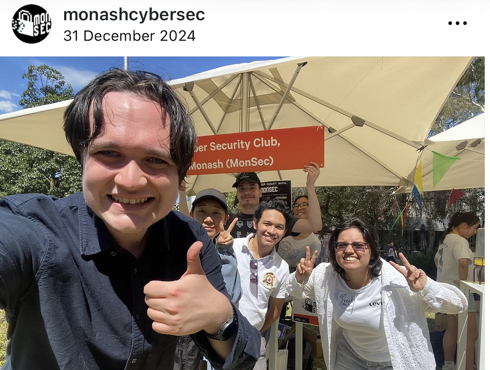

💻
Data & Querying
- Python
- SQL
- Pandas
- Excel (advanced)
- PostgreSQL
- PySpark
Business Analytics Portfolio
I turn raw data into clear business insights, actionable reports, and dashboards that help teams make better decisions.
Business Analytics Graduate
About Me
I recently completed my Master of Data Science at Monash University, where I developed strong skills in business analytics, data visualisation, dashboard design, and translating complex data into clear, actionable insights.
I enjoy building dashboards and reports that make information easy to understand at a glance. My projects have covered data cleaning, KPI tracking, stakeholder reporting, SQL querying, backend development, user testing, and written documentation.
I am currently seeking opportunities as a Business Analyst, Data Analyst, BI Analyst, or Graduate Technology professional where I can help organisations use their data more effectively.
Skills
A focused mix of data querying, BI tools, visualisation, reporting, and professional communication skills.
Featured Project
My flagship industry project. More analytics and dashboard projects are in progress and will be added here as they go live.
A scam-awareness web app helping older Australians recognise, avoid, and report scams. Built as an industry capstone project, it pairs an interactive statistics dashboard with practical tools like a scam-risk score and a guided "ScamBot" assistant.
Experience
My work experience has strengthened the professional skills I bring into analytics roles: clear communication, attention to detail, teamwork, and practical problem solving.
Permanent Part-Time
December 2024 – Present
Built strong stakeholder communication skills in a high-volume customer service environment, supporting customers with technical product questions and practical recommendations.
Autobarn Melbourne
Accuracy and process focus
Maintained accuracy across records, inventory checks, and supplier credit claims while balancing priorities during busy periods.
Customer-facing professional experience
Professional development
Developed confidence explaining complex information simply, listening to user needs, and communicating practical solutions clearly.
Open to opportunities
Graduate and junior roles
Seeking roles involving SQL, dashboards, reporting, KPI tracking, business insights, documentation, and stakeholder communication.
Education
Monash University, Melbourne
Completed December 2025
Built skills in Python, SQL, data visualisation, machine learning, dashboards, statistical modelling, big data processing, and industry-style project delivery.
De La Salle–College of Saint Benilde
With Honours, Cum Laude
Developed a strong business analytics foundation across reporting, data interpretation, information systems, and business-focused decision support.
Leadership & Volunteering
These roles helped me build confidence in leadership, public speaking, cultural awareness, teamwork, marketing, and student support.
Leadership Stories
A few of the volunteering and leadership roles that shaped how I communicate, collaborate, and support the people around me.

I supported student engagement activities and helped create a welcoming environment for students at Monash University. This taught me how to communicate clearly, work with diverse groups, and support others professionally.
Skills gained: Communication, leadership, teamwork, cultural awareness

I supported students in building confidence with English communication. This experience strengthened my ability to explain ideas clearly, encourage others, and communicate with empathy.
Skills gained: Public speaking, mentoring, confidence, empathy

I contributed to MonSec's marketing activities and helped promote cybersecurity events and student engagement. This connected my interest in cybersecurity with communication, design, and community involvement.
Skills gained: Marketing, cybersecurity awareness, teamwork, content planning
Resume
Download my resume below.
Contact
I'm currently open to business analyst, data analyst, BI analyst, and graduate technology roles.